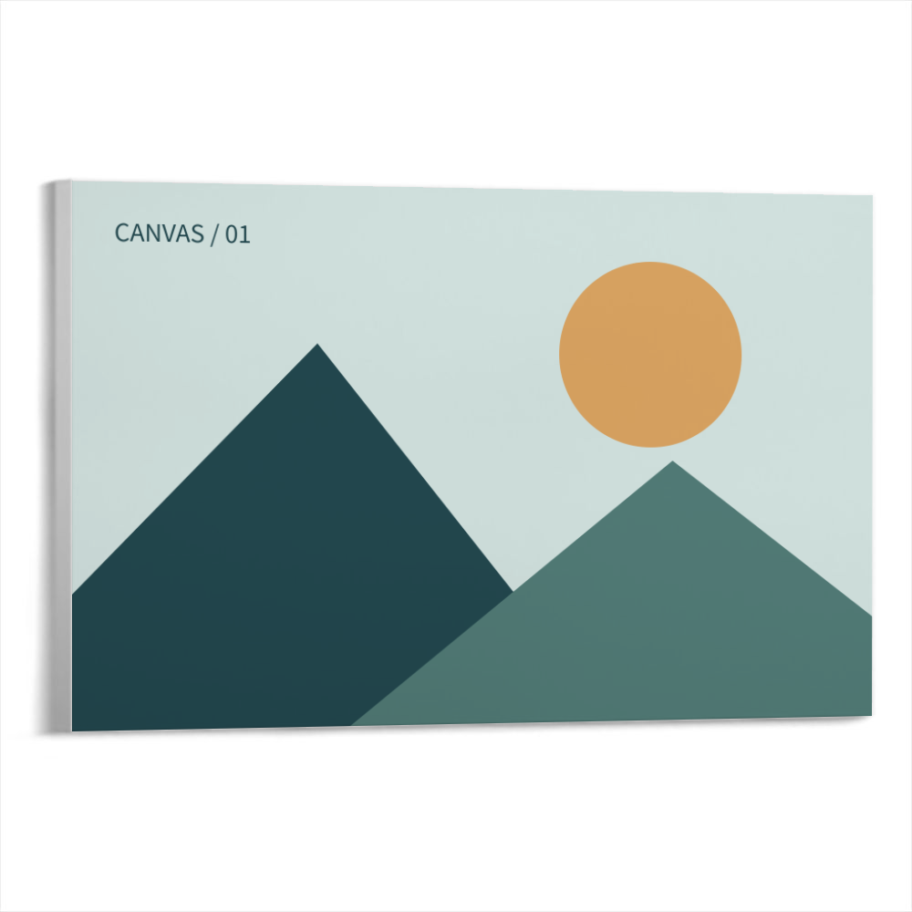
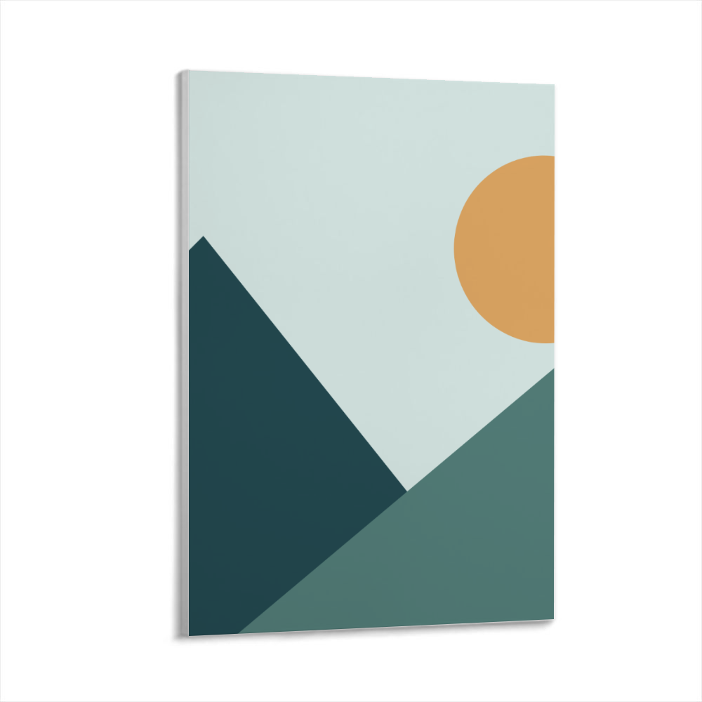
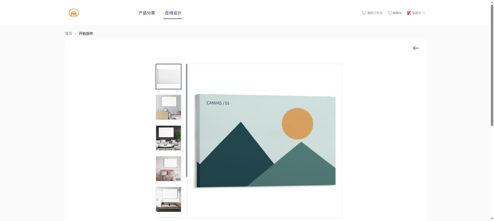
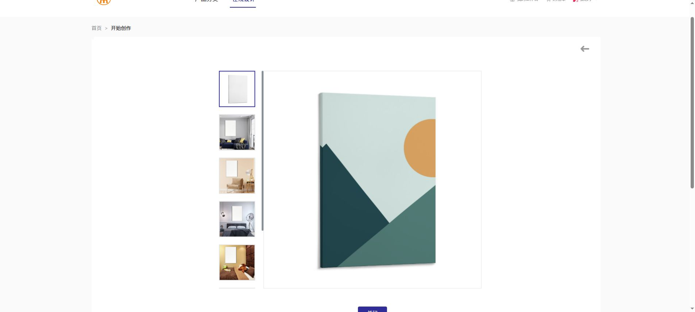

聚鼎 vs 本地 · 同图包边对比
同一张 1800×1200 测试图，均使用居中填充。聚鼎使用第一张预设场景，本地输出 1000×1000。聚鼎列为实际网页截图中的预览区域，约 600px，不是网站原始导出文件。
← 返回设计工作台横版 3:2
本地旧版
仅正面 · 左侧保持灰色
聚鼎实测
左侧带图案 · 折角反向衔接本地修正版
正面 + 左侧镜像包边 + 底图光影
竖版 2:3
本地旧版
仅正面 · 左侧保持灰色
聚鼎实测
横图居中裁切后，边缘图案进入左侧本地修正版
包边跟随裁切、缩放和旋转
结论：旧版确实缺少侧边映射，现已补齐。镜像是基于图案折角走势的视觉推断；本地几何、边宽和阴影仍为近似，未声称像素级复刻。两款当前视角主要露出左侧，不含背面或生产包边展开图。
查看聚鼎原始截图（横版）

查看聚鼎原始截图（竖版）

对比素材为内置测试图，未使用用户私有设计。为进行实测，测试素材已上传到聚鼎“我的素材”；未保存设计或加入购物车。